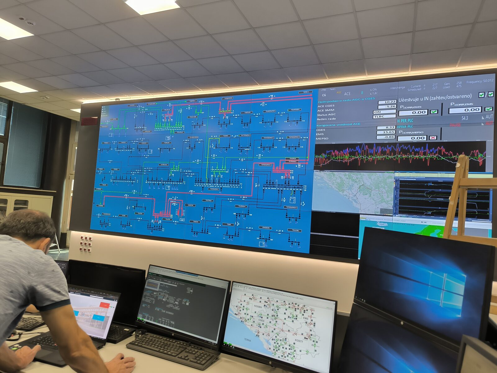
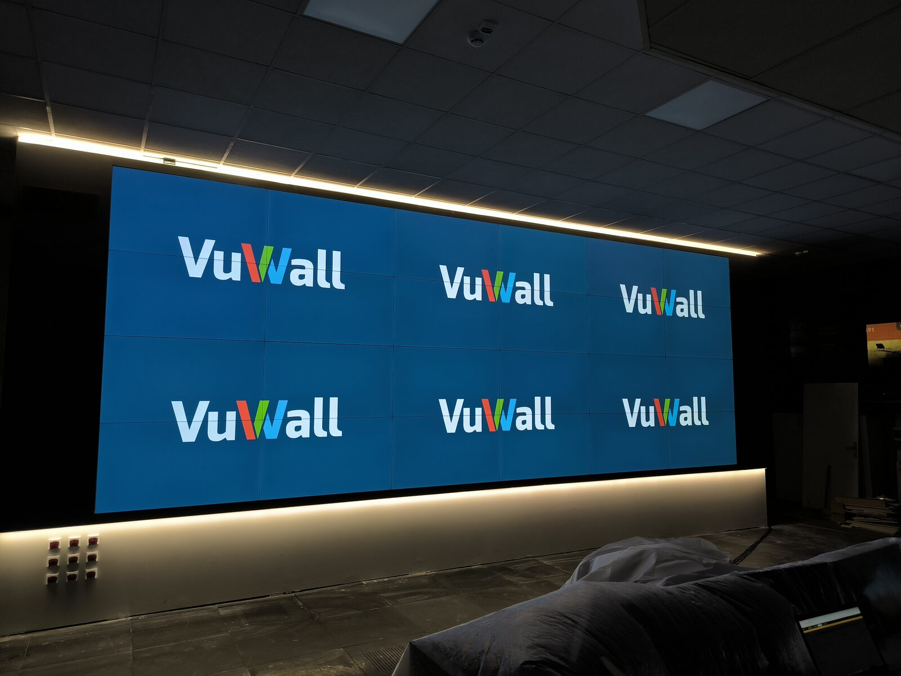
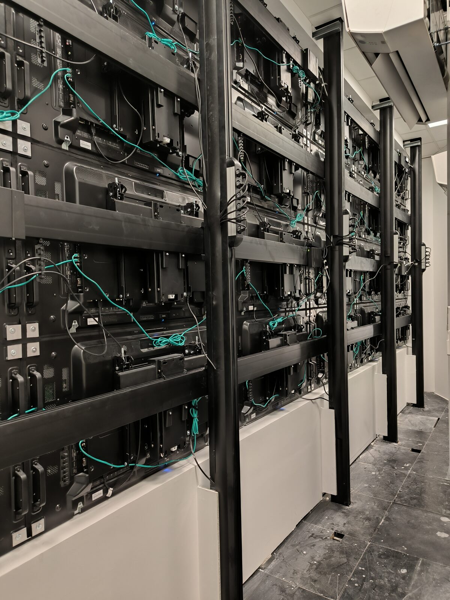
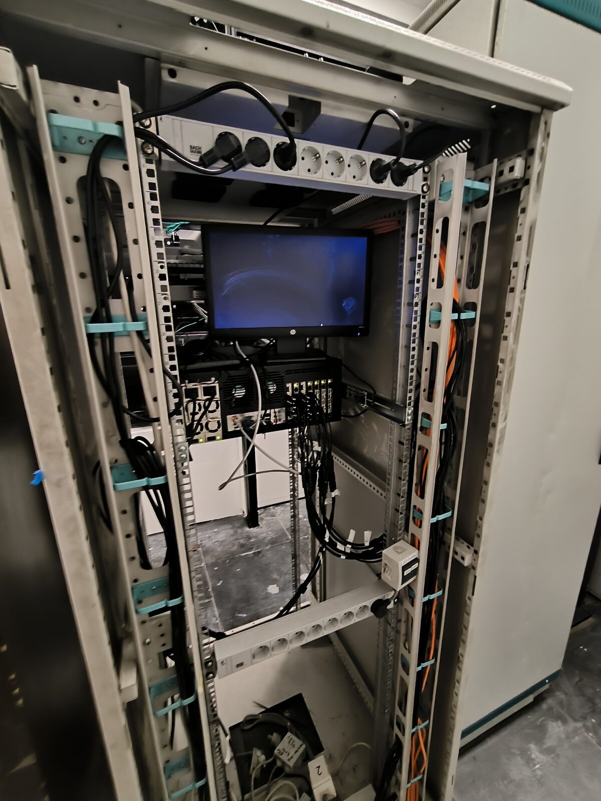

Video wall 6×4
24 profesionalna ekrana od 55 inča sa ultra tankim ivicama od 0,44 mm, koji funkcionišu kao jedinstvena vizuelna celina.

Kao glavni izvođač, TRS je isporučio video wall u konfiguraciji 6×4 za dispečerski centar CGES, nacionalnog operatora prenosnog sistema Crne Gore, omogućavajući neprekidan prikaz podataka o elektroenergetskoj mreži u realnom vremenu.

CGES je nacionalni operator prenosnog sistema Crne Gore, zadužen za praćenje i balansiranje elektroenergetske mreže u realnom vremenu. Video wall je centralni prikaz dispečerskog centra, na koji se operateri oslanjaju 24 časa dnevno.
TRS je, u ulozi glavnog izvođača, realizovao kompletnu isporuku, instalaciju i konfiguraciju novog video zida, uključujući povezivanje SCADA sistema, kalibraciju i primopredaju rešenja operaterskom timu.
Rešenje je projektovano za kontinuiran rad, jednostavno održavanje i upravljanje sadržajem u realnom vremenu.
24 profesionalna ekrana od 55 inča sa ultra tankim ivicama od 0,44 mm, koji funkcionišu kao jedinstvena vizuelna celina.
Svaki panel se izvlači radi servisa ili zamene na licu mesta, bez demontaže zida i bez prekida rada kontrolne sale.
Distribucija više izvora podataka po zidu u realnom vremenu, uz raspoređivanje sadržaja sa operaterskog kontrolnog panela.
Povezivanje SCADA sistema za nadzor mreže, kalibracija boja i geometrije svih panela i obuka operaterskog tima.
Timelapse prikazuje montažu i pripremu video zida u dispečerskom centru.
Od primopredaje, video wall neprekidno prikazuje topologiju mreže, AGC/ACE parametre i tokove razmene.


Push-out nosači i uredno kabliranje omogućavaju servis pojedinačnih panela bez prekida rada.


Od primopredaje, video wall bez prekida prikazuje topologiju mreže, AGC/ACE parametre i tokove razmene, kao stalna podrška nadzoru elektroenergetskog sistema.
Integrisani push-out sistem montaže omogućava servis ili zamenu pojedinačnih panela na licu mesta, dok kontrolna sala ostaje u punoj funkciji.
Zahvaljujući ivicama od svega 0,44 mm i upravljanju kroz jedinstvenu VuWall platformu, operateri kompleksne podatke o mreži sagledavaju kao jednu neprekinutu sliku, a ne kao 24 odvojena ekrana.